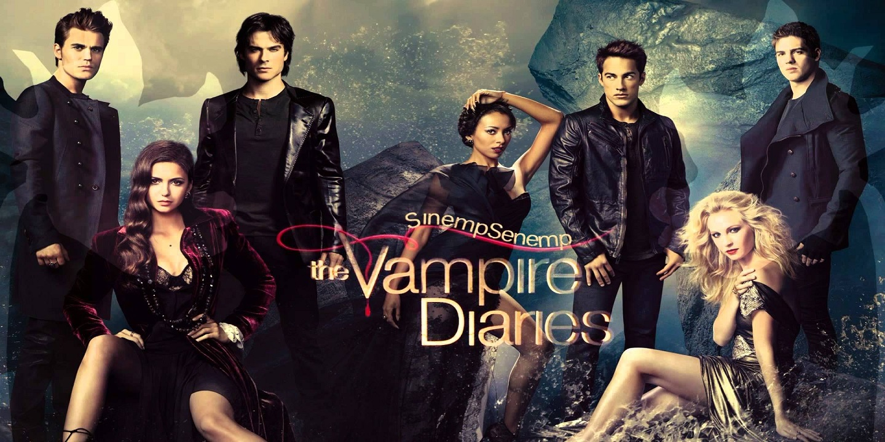

Séries

Game of Thrones
2011 - 2019 / 52min / Drama, Fantasia
Sinopse: Nove famílias da nobreza lutam pelo controle de Westeros, um lugar onde os verões podem durar
vários anos e o inverno, a vida inteira.
